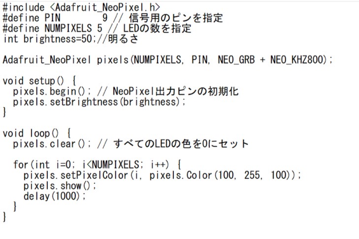
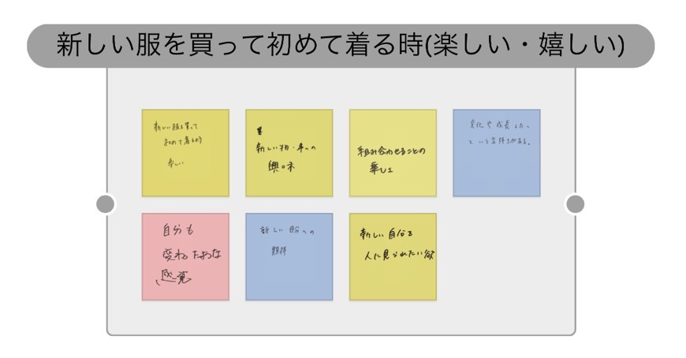
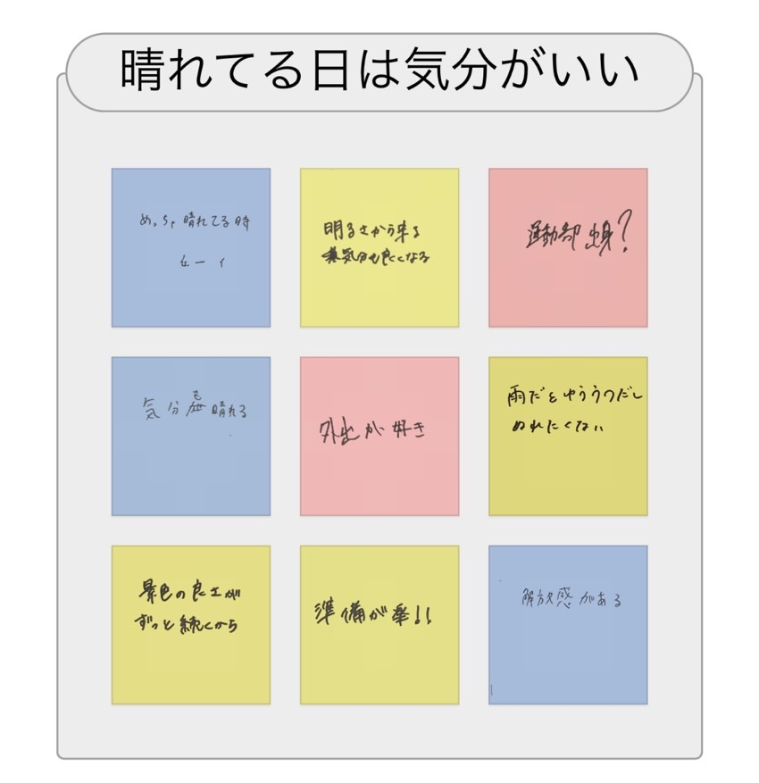
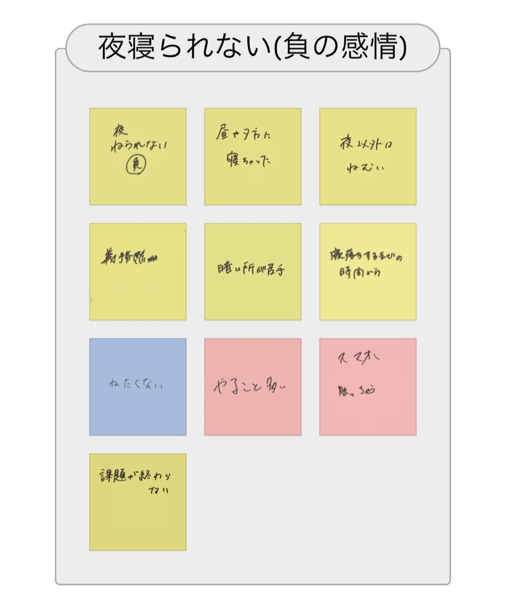
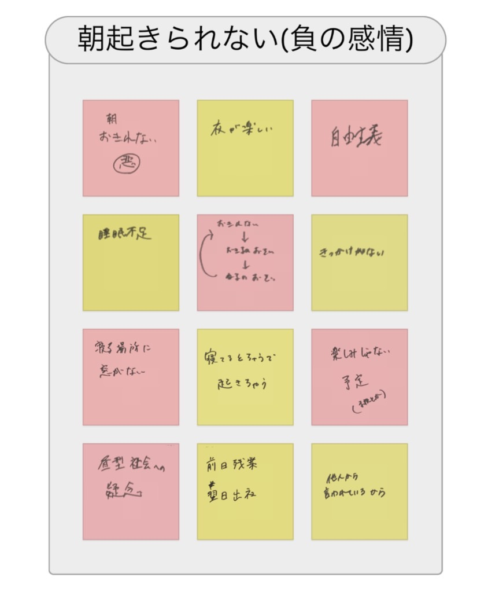

≪NeoPixelを光らせる≫
１．NeoPixelの５VをArduinoの５Vに繋ぐ
２．NeoPixelのDinをArduinoの９番に繋ぐ
３．NeoPixelのGNDをArduinoのGNDに繋ぐ
４．Arduino IDEにプログラムを書き込み、Arduinoに送る。
５．NeoPixelが光る！
〖プログラムコード〗

≪NeoPixelの光を操る≫
≪ポストイットのまとめ≫
・新しい服を買って初めて着る日は楽しい

・晴れている日は気分がいい

・夜眠れない負の感情

・朝起きられない負の感情
